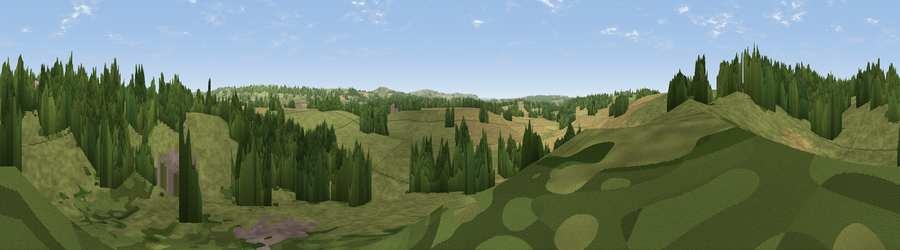

Beacon Hill
#41548 in England · top 84% of its area beats it · near HilmartonThe view, rendered

A 360° render of this exact spot computed from the terrain model, tree cover and land cover — summer colours, afternoon light, calibrated against photographs of famous viewpoints. Real trees, hedges and buildings will differ in detail.
The panorama
Grey silhouette: terrain skyline in each direction (720 bearings, Earth curvature and refraction included). Dashed green: skyline with trees (+15 m) and buildings (+8 m) as obstacles. Blue strip: how far the ground is visible on each bearing.
Where the view opens
Wedge length = distance to the farthest visible ground on that bearing (vegetation-aware). Rings at 10, 25 and 50 km.
What fills the view
62% grassland · 23% woodland · 14% cropland · 1% built-up
Angular shares of the visible panorama (visual magnitude), not map area. Landscape diversity 0.42 (0–1 Shannon).
Key numbers
More beautiful places nearby
The staircase of upgrades: each row has a higher view potential than everything closer. Driving times are estimates from straight-line distance, calibrated against real road routing — check an actual route before setting out.
| Place | Direction | Drive | Score |
|---|---|---|---|
| Viewpoint near Hilmarton | W · 1 km | ~2 min | 45.2 |
| Viewpoint near Bradenstoke | NW · 3 km | ~8 min | 56.4 |
| Viewpoint near Foxham | WNW · 4 km | ~8 min | 57.6 |
| Viewpoint near Foxham | WNW · 4 km | ~9 min | 60.5 |
| Viewpoint near Clyffe Pypard | ESE · 4 km | ~9 min | 62.5 |
| Viewpoint near Clyffe Pypard | ESE · 4 km | ~9 min | 63.7 |
| Viewpoint near Clyffe Pypard | E · 6 km | ~13 min | 64.7 |
| Viewpoint near Cherhill | SSE · 8 km | ~16 min | 71.2 |
51.48574, -1.97945 · source: osm peak · position refined by local search. Computed location — check access rights before visiting.